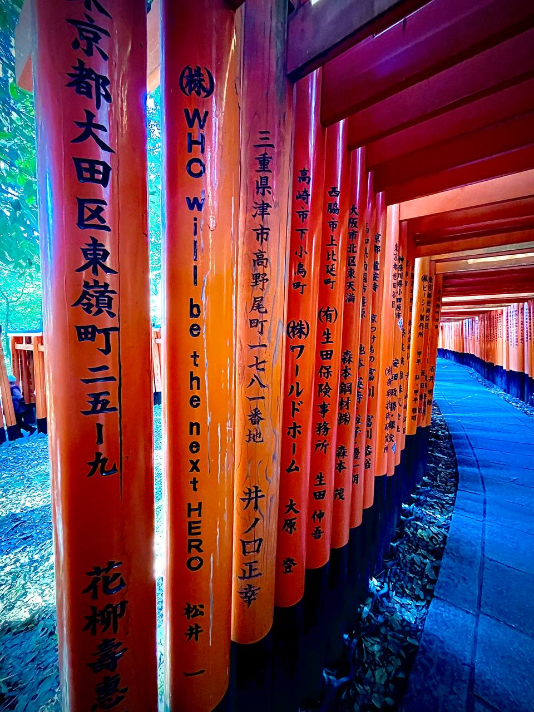

Viaggio in Giappone
viaggioingiappone@gmail.com

Il Fushimi Inari Taisha è uno dei santuari shintoisti più antichi e venerati del Giappone, situato nella zona meridionale di Kyoto. La sua fondazione risale al 711 d.C., durante il periodo Nara, sul monte Inari. È dedicato a Inari, la divinità del riso, della prosperità e degli affari, una delle più importanti nel pantheon shintoista.
Secondo la leggenda, il santuario fu fondato quando il clan Hata, un potente gruppo di immigrati cinesi e coreani che si stabilì in Giappone, offrì preghiere a Inari affinché garantisse abbondanti raccolti di riso. Inari rispose alle preghiere facendo piovere riso dal cielo, evento che portò alla costruzione del primo santuario sulla collina di Inari.
Durante il periodo Heian (794-1185), Fushimi Inari Taisha acquisì grande importanza, soprattutto perché Kyoto divenne la capitale imperiale. La nobiltà e i mercanti giapponesi iniziarono a venerare Inari non solo come dio del riso ma anche della prosperità e del commercio.
Nel corso dei secoli, il santuario fu ricostruito e ampliato più volte. L'attuale struttura principale risale al 1499, anche se molte delle caratteristiche più iconiche, come i torii rossi, sono state aggiunte nei secoli successivi.
Uno degli aspetti più affascinanti di Fushimi Inari è la presenza di oltre 10.000 torii rossi che formano tunnel lungo i sentieri del monte Inari. Questi torii sono donati da aziende, famiglie e individui come offerta a Inari per aver ricevuto fortuna e prosperità. Ogni torii riporta inciso il nome del donatore e la data della donazione.
Il tunnel principale di torii, noto come Senbon Torii ("mille torii"), inizia dietro l'edificio principale del santuario e continua per diversi chilometri lungo i sentieri del monte Inari, offrendo una passeggiata scenografica e spirituale ai visitatori.
Un altro simbolo significativo del santuario sono le statue di volpi (kitsune), ritenute i messaggeri di Inari. Queste volpi sono spesso raffigurate con chiavi in bocca, rappresentanti le chiavi dei granai di riso, oppure con rotoli di messaggi, simbolo del ruolo di mediatori tra gli uomini e la divinità.
Fushimi Inari Taisha ospita diverse feste annuali, tra cui l'Inari Matsuri, che si tiene a inizio febbraio, e la celebrazione del Capodanno, quando migliaia di persone visitano il santuario per pregare per un anno prospero. Durante queste occasioni, il santuario si anima con processioni, danze e cerimonie tradizionali.
Oggi, Fushimi Inari Taisha è non solo un importante luogo di culto ma anche una popolare destinazione turistica, attirando milioni di visitatori ogni anno. Il contrasto tra la vibrante tonalità rossa dei torii e il verde della foresta circostante crea un ambiente suggestivo che rappresenta uno dei panorami più iconici del Giappone.
La salita fino alla cima del monte Inari, che dura circa 2-3 ore, offre ai visitatori una serie di santuari minori e una vista panoramica sulla città di Kyoto, rendendo il viaggio spirituale anche un'esperienza fisica e contemplativa.
In sintesi, il Fushimi Inari Taisha è un luogo dove storia, religione e natura si fondono, offrendo un'esperienza unica e affascinante per chiunque lo visiti.
Prenota il tuo posto
Punti salienti
- Torii
- Volpe Inari
- Importanza storica e religiosa
Consigli utili
- Scarpe comode
- Partire presto
- pranzo al sacco
Torna ad inizio pagina
Copyright © Fushimi Inari